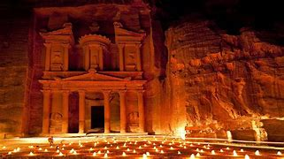
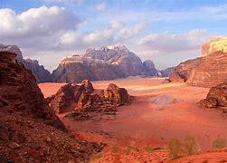

Jordan is a sovereign Arab state in the Middle East. The capital, Amman, is Jordan's most populous city as well as the country's economic, political and cultural centre. Its major tourist attractions include visiting historical sites, like the worldwide famous Petra (UNESCO World Heritage Site since 1985, and one of New Seven Wonders of the World), the Jordan River, Mount Nebo, Madaba, numerous medieval mosques and churches, and unspoiled natural locations (as Wadi Rum and Jordan's northern mountainous region in general), as well as observing cultural and religious sites and traditions. Jordan also offers health tourism, which is focused in the Dead Sea area, education tourism, hiking, snorkeling and scuba diving in Aqaba's coral reefs, pop-culture tourism and shopping tourism in Jordan's cities. More than half of the approximate 4.8 million Arab tourists in 2009, mainly from the GCC, said they plan to spend their holidays in Jordan.[1][>
 